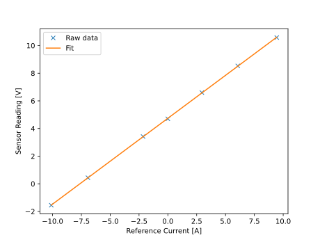

Current Sensor Calibration¶
Background¶
Motor drives typically require current sensors to provide feedback to the control system. This document describes a method to calibrate the current sensors to a linear model during commissioning of a motor drive. The calibration is characterized by two parameters, a gain and an offset, that describe how the sensed current appears as a voltage to the AMDC.
Current sensors are transducers which produce an output signal (either current or voltage) proportional to the primary current flowing through the sensor. There are different types of current sensors relying on different physical phenomenons such as shunt resistors and hall-effect. For the purpose of this document, the specific type of sensor does not matter—just that the output signal is linear with the primary current, and that it is measured as a voltage by the control system. The current sensor needs to be calibrated against an appropriate reference before it can be used in the control system. This reference is a known, trusted current sensor, such as a precision digital multimeter (preferred), hall-effect current clamp, or the setpoint of a DC power supply. While the manufacturer datasheet provides nominal parameters, calibration of the current sensor is necessary to get accurate measurements to account for any deviation due to process variation.
Calibration Method¶
A method is now provided to calibrate the current sensors in a motor drive. An example of the assumed system for a three phase motor is shown in the figure below.
Typically, each phase has a current sensor associated with it that needs to be calibrated. This method assumes that the signal measured by the AMDC for each sensor is a voltage that must be converted into a current value.
Connect the reference curent sensor (i.e. precision digital multimeter) to the phase U cable of the motor.
Set up your AMDC system to enable you to log the raw reading of the drive’s current sensor attached to phase U (presumably, by sampling an ADC channel). It is recommended to use the AMDC’s logging functionality so that data can be collected over a period of time (e.g. 100 ms) and post-processed to find the average value.
Record the drive’s sensor reading when there is no current flowing through phase U. Hint: remember to calculate this value as the average over a period of time.
Cause a “small” curent to flow through phase U (i.e., apply a voltage across phase U). The value of current is left to the discretion of the user based on the system nominal ratings.
Record the drive’s sensor reading as well as the reference sensor’s reading of the current flowing through the phase U cable.
Progressively increase the phase U current and record the readings. Do this over the full range of rated current, both positive and negative.
Tabulate the measurements as shown in this example
exp_data.csvfile.Fit a linear expression of the form \(\text{Reading [V]} = \text{Gain [V/A]} \times \text{Current [A]} + \text{Offset [V]}\) to the obtained measurements. This example Jupyter notebook is provided to illustrate the process.
Repeat the exercise for the remaining phases of the system.
An example of the results are shown in the plot below. The obtained gain and offset can be used directly in the control code to convert the sensor reading into the actual current measurement.

Tip
Be sure to conduct the calibration process over the full range of current data (both positive and negative current) to account for any variation in the current sensor reading due to directionality of current.
Use of Calibration Data¶
The below codeblock can be utilized by the user to convert between raw measurements from the sensor and the actual currents.
#define INV_GAIN (1.0/0.621) // Inverse of gain obtained from curve fit (1/0.621)
double offset = 4.739; // [V], offset from curve fit. This is a variable so that the drive can remeasure and adjust the offset at startup
double current_measurement; // Actual current measurement, to be used in control algorithm
current_measurement = (sensor_reading - offset)*INV_GAIN; // sensor_reading is the raw measurement and needs to be obtained by the user
Tip
In AMDC firmware versions 1.4.1 and above, the amds driver has a built in function amds_convert_voltage() to streamline this process. Default offset and gain values for each different sensor card are also included.
Recalculate Offset At Startup¶
The offset value of the current sensors can drift over time. It is recommended that drive developers include code in their control logic to automatically re-zero the current sensor at startup, as follows:
Prior to enabling the PWM, when it is known that there is no current flowing in the motor, record approximately 100 ms of sensor data on each phase.
For each phase, calculate the average of this data and use it as the new
offsetvalue in the code block above.Proceed with starting-up the drive.
Conclusion¶
The current sensor calibration method presented in this article should be viewed as a best-practice for motor drive development. Readers are welcome to directly use the provided code and Jupyter notebook in their motor drives.